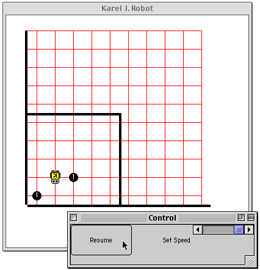

Choosing the first programming language
Tomas Petricek
email: t.petricek@kent.ac.uk
twitter: @tomaspetricek
Background
Methodology

In this presentation
- Papers describing particular choices
- What reasoning they use
- Focuses on interesting choices
Planned for final report
- Review common choices at UK universities
- Evaluation of the non-interesting choices
- Perception in online discussions
Choosing the first programming language
Why does first language matter?
Programmers are emotional about their favorites
Provides lens for further learning
Immediately useful skills for students
Language determines many other tools

Legendary programming textbook for computer scientists
Taught to MIT undergrads between 1980s-2010s
Regarded as beautiful but quite hard and impractical
Argumentation
Choosing a language
What properties of language get mentioned
Orientation - object-oriented, functional, procedural
Syntax - ease of learning and simplicity
Industry - is this what practitioners use?
Tooling - does it encourage good practices?
Microworlds - what tasks will students be solving
Choosing a language
What aspects never get mentioned
Aesthetics - is it beautiful computer science idea?
Culture - what image does an institution maintain
Politics - who is in charge and what's their preference
In the 80s and 90s, engineers built complex systems by combining simple and well-understood parts.
This is no longer the case. Engineers now routinely write code that they don't fully understand.
Nowadays, we do programming by poking.

Technical advantages of functional languages are obvious.
We should not teach purely functional programming.
We should teach essential programming concepts.
Haskell works as an equaliser between students who know some programming and those who don't.
Kent Recursive Calculator
and Miranda
Having program and data in the same form leads to many confusions in Lisp that do not occur in KRC or Miranda.
Miranda makes it easier to prove equations
Our experience suggests that undergraduate computer science courses should emphasize basic notions of modularity, specification, and data abstraction, and should not let these be displaced by more advanced topics.
Discussion
Choosing a programming language
It's more than a language
- Python and poking approach
- Racket with language levels
- Haskell with focus on microworlds
What do we optimize for
- Teaching concepts we find important
- Teaching thinking we find important
- Transition from elegant to industrial
Limitations of reviewed literature

Bias in empirical studies
- Only focuses on interesting choices
- Led by enthusiastic teachers
- What is a good learning experience?
Wicked problem
- Defining criteria determines the solution
- Interconnected with other problems
- Large economic for change
Choosing the first programming language
Tentative conclusions based on literature review
- Choosing a language is a wicked problem?
- Good reasoning can support any choice?
- Culture and politics determines what we optimize for?
Tomas Petricek
t.petricek@kent.ac.uk | @tomaspetricek
Notes
Programming by poking: why MIT stopped teaching SICP
-
"The SICP curriculum no longer prepared engineers for what engineering is like today. Sussman said that in the 80s and 90s, engineers built complex systems by combining simple and well-understood parts. The goal of SICP was to provide the abstraction language for reasoning about such systems.
-
"Today, this is no longer the case. Sussman pointed out that engineers now routinely write code for complicated hardware that they don’t fully understand. The same is true at the software level, since programming environments consist of gigantic libraries with enormous functionality. According to Sussman, his students spend most of their time reading manuals for these libraries to figure out how to stitch them together to get a job done. He said that programming today is “More like science. You grab this piece of library and you poke at it. You write programs that poke it and see what it does. And you say, ‘Can I tweak it to do the thing I want?'”. The “analysis-by-synthesis” view of SICP — where you build a larger system out of smaller, simple parts — became irrelevant. Nowadays, we do programming by poking.
-
comment: "Programing by synthesis of well understood parts is graceful and beautiful and fun. Programming by trying to get never-well-documented libraries to barely do something is f*ing torture."
The risks and benefits of teaching purely functional programming in first year - Haskell - "we should not teach purely functional programming" - but we should teach essential programming concepts - problems with I/O and "hello world"
AIMS - convey elementery techniques of programming - introduce essential computing concepts - develop analytic thinking and problem solving
NOTES - technical advantages of functional languages are obvious - Haskell works as an equaliser between students who know some programming and those who don't -> female students coming from mathematics background -> also the case for SICP
Why calculating is better than scheming - KRC (Kent Recursive Calculator) / Miranda - SICP is too tightly linked to Scheme - lacks: pattern matching, syntax close to mathematical notation, lazy evaluation, static types - based on experience teaching both - Miranda makes it easier to prove equations (syntactically) - one exercise ("mobiles") and learning from that -> types help -> can define abstract data type - confusion about 'program is data' (vs. revelation that 'program is data') - you can still treat programs as data: -> "simple interpreter" example - showing what kinds of examples we care about
The structure and interpretation of computer science curriculum
- SICP focused on CS concepts like abstraction
- 2000 critique of SICP by Jackson & Chapin
"our experience suggests that undergraduate computer science courses should emphasize
basic notions of modularity, specification, and data abstraction, and should not let
these be displaced by more advanced topics, such as design patterns, object-oriented
methods, concurrency, functional languages, and so on"
- series of teaching languages based on Scheme with increasing language complexity
WANTS - whatever is needed in upstream courses - latest industry trends that they've read about in the news - students have different things they want to learn/do - will disappoint some - it's important to "explain our choice" well
"Clearly, a computer science curriculum must not, and doesn’t have to, become a vocational training ground for the latest industrial programming language and programming tools."
SCHEME - don't have to spend time explaining types - syntax is simple - SICP relies on complex CS domain knowledge - interesting for MIT students
From Principles to Practice with Class in the First Year - WANT TO teach industrial object-oriented language by the end of the first year - transition from teaching language (scheme, etc.) to object-oriented "professional" language through a series of small educational languages that add concepts - first semester with HTDP, second semester with Java?
Teaching Java with the BlueJ environment - BlueJ is educational Java environment that "allows students to concentrate on solving programming problems without becoming distracted by the mechanics of compiling and executing Java programs" -> Maybe that's what we should teach though :-) - problem with translating concepts from simple educational environment to the real one (K\"oling and Rosenberg, 1996)
Teaching Java First: Experiments with a Pigs - Early Pedagogy
- object-oriented concepts first
- The Joint Task Force on Computing Curricula (2001) notes that Java and C++ are significantly
more complex than classical languages. Unless instructors take special care to introduce the
material in a way that limits this complexity, such details can easily overwhelm introductory
students.
- "Karel the Robot" approach - microworld
- uses BlueJ
On Teaching How to Design Programs - HTPD includes things like "testing" and "refactoring" - "Findler et al. (2002) argue that the type systems of Haskell and ML are too sophisticated for beginning students,but that a first-order, monomorphic type system might be helpful for beginning students. Felleisen et al. (2004a) argue that dynamic typing is a benefit because students and teachers need not spend energy finding and explaining static type errors. (And when a type error occurs dynamically, it comes with an example!)"
Java as a teaching language - opportunities, pitfalls and solutions - How to introduce good object-oriented practices from the beginning - goodbye "hello world", introducing "micro worlds" of boxes
Helium, for learning Haskell - Haskell compiler with better error reporting
xx